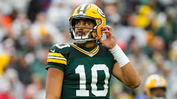

 GREEN BAY, Wis. -- Anyone who hasn't watched Jordan Love lately can get a feel for his season by looking at the replay of one game: Sunday's 24-22 win over the Houston Texans. It featured a little bit of everything the Green Bay Packers' quarterback has done in his five starts this season: spectacular throws that were reminiscent of the second half of last season when he was one of the best in the league, but also some questionable decisions that led to the kind of interceptions from the first half of last season when it looked like he still had much to learn about playing in the NFL. At this point, heading into Sunday's game against the Jacksonville Jaguars (1 p.m. ET, Fox) that will be Love's 24th career regular season start, it might be too soon to tell whether Love has an interception problem or is taking a necessarily aggressive approach in his second year as a starter. "There are tons of unbelievable plays that happen every Sunday that wouldn't happen otherwise for sure," Packers center Josh Myers said of Love's aggressive nature. "It's unbelievable to sit there in the pocket and get to see some of these throws, and the way they land from my point of view is unbelievable." This much is true for 2024: No one has thrown more interceptions this season than Love. His eight picks are tied with Patrick Mahomes (Chiefs) and Gardner Minshew (Raiders) for the league lead, though he has played one fewer game. Yet only one quarterback has thrown more touchdown passes than Love. His 15 passing scores rank tied for second with Lamar Jackson (Ravens), behind only the 18 thrown by Baker Mayfield (Bucs). Both Jackson and Mayfield have played two more games. "I think, obviously, the interceptions are something I want to clean up and definitely improve on, being able to be clean with the ball," Love said Wednesday. "I think the big focus for us is to go a game on offense and have 100 percent ball security. That's definitely a big takeaway."
Click here to continue reading.
Source: ESPN, accessed 10/24/2024